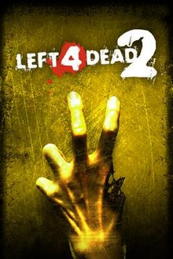

Left 4 Dead 2 — это кооперативный шутер от первого лица с элементами survival horror, разработанный компанией Valve Corporation и изданный Electronic Arts. Игра является сиквелом Left 4 Dead, такого же кооперативного шутера, в котором люди сражаются с ордами живых мертвецов, которые заполонили мир.
 Действие игры происходит спустя некоторое время после событий Portal в разрушенной и заброшенной Лаборатории исследования природы порталов (Aperture Science) и фокусируется на дальнейшем противостоянии всё той же главной героини, подопытной девушки Челл, и маниакального суперкомпьютера GLaDOS.
Действие игры происходит спустя некоторое время после событий Portal в разрушенной и заброшенной Лаборатории исследования природы порталов (Aperture Science) и фокусируется на дальнейшем противостоянии всё той же главной героини, подопытной девушки Челл, и маниакального суперкомпьютера GLaDOS.
 Dead by Daylight — это многопользовательская игра в жанре ужасов в режиме 4 против 1, где один игрок берёт на себя роль жестокого Убийцы, а четыре других игрока являются Выжившими, пытающимися сбежать от убийцы. Выжившие играют от третьего лица и имеют преимущество в ситуационной осведомлённости.
Dead by Daylight — это многопользовательская игра в жанре ужасов в режиме 4 против 1, где один игрок берёт на себя роль жестокого Убийцы, а четыре других игрока являются Выжившими, пытающимися сбежать от убийцы. Выжившие играют от третьего лица и имеют преимущество в ситуационной осведомлённости.